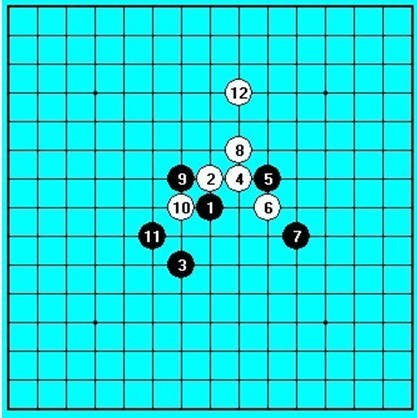
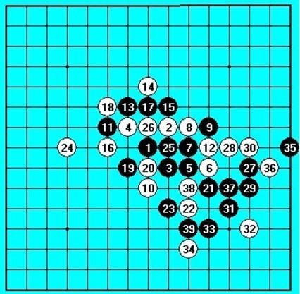
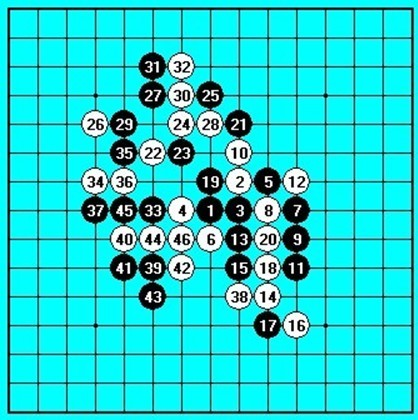
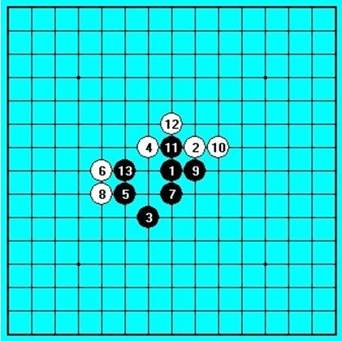

孩子杯自战解说（论基础的重要性与赛前的变化针对准备）
#1 孩子杯自战解说（论基础的重要性与赛前的变化针对准备） 作者：南京小飞机 发表时间：2009-6-26 14:01:21
孩子（曾杨锋）云飞（仇云飞）其他俩都是真名。
这种字体是写赛前的变化针对准备
这种字体是讨论基础的重要性
早说好要把我们这帮高校赛夺冠队伍的队员组织起来自己打个循环的。虽说不再下棋了，但是跟朋友一起玩的机会是不能错过的！好不容易今天有了这么个机会！ 20 号四级考完， 24 号考试结束 ~ 终于！在 25 号一早狂奔向科大！
首先郁闷一下宿舍蚊子的数量！很是崩溃！ 4 点多醒了 ~ 居然是被痒醒的！然后发现屁股上、大腿上、小腿上、手臂上、脸上有不下 10 个包！原来我睡觉就是喂蚊子的啊！
一早 7 点从宿舍出发，坐上支 9 专，头疼的是到国贸过来一个半小时！国贸桥上堵车堵得厉害，更可怕的是地铁，好不容易才挤上去，车厢里已经没有半点空隙了！总算是体会到了北京的上班流！
到科大已经 9 点半了，直接去了活动室（在此强烈感谢小强为大家借到了相对外面凉快得多的活动室！可惜的是小强上午有事，所以没法参加比赛。），孩子、云飞和张珵已经在了，四个人准备开战！前段时间因为不准备下棋了，所以把变化全部转移给别人，全团赛上本想帮助江苏一队 2 台拿下孩子，可惜孩子没有机会碰上江苏一队！于是我对他准备的终极大招又只能暂缓使用 ~ 之后我写了离开宣言，并把变化给了张珵，想让张珵在孩子杯上用我准备的最后一个变化把孩子干掉！这样我离开之后也可以安心了（咋搞得跟死不瞑目似的？！） ~ 当时因为孩子杯准备在 7 月举办，而我到无锡的飞机是 27 号的，所以没打算参加 ~ 结果这比赛因意外提前 ……
首先让张珵对孩子吧！毕竟那个变化跟他之后他是细拆过的 ~ 而我没有特别仔细的拆 ~ 所以宁可让张珵把孩子爽爽地虐了！免得我去浪费变化 ~ 我对云飞 ~ 可惜猜先结果是 …… 孩子和云飞开局！
 
#2 Re:孩子杯自战解说（论基础的重要性与赛前的变化针对准备） 作者：小天元子 发表时间：2009-6-26 14:04:07
图片都挂了，#3 Re:孩子杯自战解说（论基础的重要性与赛前的变化针对准备） 作者：南京小飞机 发表时间：2009-6-26 14:26:57
第一张
#4 Re:Re:孩子杯自战解说（论基础的重要性与赛前的变化针对准备） 作者：南京小飞机 发表时间：2009-6-26 14:28:47
第二张
#5 Re:Re:Re:孩子杯自战解说（论基础的重要性与赛前的变化针对准备） 作者：南京小飞机 发表时间：2009-6-26 14:29:18
第三张
#6 Re:Re:Re:Re:孩子杯自战解说（论基础的重要性与赛前的变化针对准备） 作者：南京小飞机 发表时间：2009-6-26 14:30:42
第四张

没有打谱软件
#7 Re:孩子杯自战解说（论基础的重要性与赛前的变化针对准备） 作者：点点 发表时间：2009-6-26 14:54:14
原来沈瓒和丸子都没有走.耶....
#8 Re:Re:孩子杯自战解说（论基础的重要性与赛前的变化针对准备） 作者：黄药师 发表时间：2009-6-26 16:19:08
引用：两位传授点谱来
原文由 点点 发表于 2009-6-26 14:54:14 :原来沈瓒和丸子都没有走.耶....

#9 Re:孩子杯自战解说（论基础的重要性与赛前的变化针对准备） 作者：自来水 发表时间：2009-6-26 16:35:05
...感觉很多是白投机取巧,我还是老老实实把谱背熟...免得实战必胜都赢不了这种事虽然概率不高吧,但发生一次就够打击人信心的了..........
#10 Re:孩子杯自战解说（论基础的重要性与赛前的变化针对准备） 作者：越狱行辕 发表时间：2009-6-27 5:06:22
不好意思啊？仇云飞多大啊 是个孩子啊
原谅我的无知
#11 Re:孩子杯自战解说（论基础的重要性与赛前的变化针对准备） 作者：越狱行辕 发表时间：2009-6-27 5:14:36
沈瓒是哪个？只是前段时间看他发表 离开宣言
鄙视一下 告诉对手 12挡上简单胜，然后比赛时候用这个。对你彻底无语。
#12 Re:孩子杯自战解说（论基础的重要性与赛前的变化针对准备） 作者：安娜制作所 发表时间：2009-6-30 14:18:29
很多人没这么勤快的,每种局都拆一下的!大多对瑞星拆得多一些!#13 Re:孩子杯自战解说（论基础的重要性与赛前的变化针对准备） 作者：怪 发表时间：2010-3-2 20:13:44
习惯从开局第2手开始算计，从第4手开始计算。。。